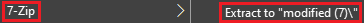
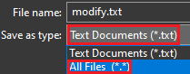
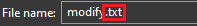
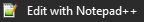

<link rel="preconnect" href="https://fonts.googleapis.com">
<link rel="shortcut icon" type="image/x-icon" href="favicon.ico">
<link rel="preconnect" href="https://fonts.gstatic.com" crossorigin>
<link href="https://fonts.googleapis.com/css2?family=Open+Sans:wght@300;400&display=swap" rel="stylesheet">
<script type="module" src="https://md-block.verou.me/md-block.js"></script>
<title>MLB - Modding Guide - Start</title>

    <style>
	#splash {
	position: relative;
	top: -40px;
	left: 180px;
	font-size: 25px;
	}
	
     @font-face {
   font-family: retro;
   src: url(nokiafc22.ttf);
}
@keyframes move-background {
  from {
    background-position: 100% 0; /* starting position */
  }
  to {
    background-position: 0 0; /* ending position */
  }
}
	  html {
        font-family: retro;
		  background: #202020;
		  background-size: 50px 50px;
		  background-image: url("bg.png");
            background-repeat: repeat;
			color: white;
          animation: move-background 60s linear infinite;
		      overflow-x: hidden;
      }
	  a {
	  color: DarkSalmon;
	  }
      .button {
	box-shadow: 0px 10px 14px -7px #276873;
	background:linear-gradient(to bottom, #599bb3 5%, #408c99 100%);
	background-color:#599bb3;
	border-radius:8px;
	display:inline-block;
	cursor:pointer;
	color:#ffffff;
	font-family:Arial;
	font-size:20px;
	font-weight:bold;
	padding:13px 32px;
	text-decoration:none;
	text-shadow:0px 1px 0px #3d768a;
}
.button:hover {
	background:linear-gradient(to bottom, #408c99 5%, #599bb3 100%);
	background-color:#408c99;
}
.button:active {
	position:relative;
	top:1px;
}

header {
  padding: 3px;
  background-color: grey;
  color: white;
  up: 100%;
  bottom: 0;

  /* And if you want the div to be full-width: */
  left: 0;
  right: 0;
}

.btn {
  background: #4ad934;
  background-image: -webkit-linear-gradient(top, #4ad934, #3b9949);
  background-image: -moz-linear-gradient(top, #4ad934, #3b9949);
  background-image: -ms-linear-gradient(top, #4ad934, #3b9949);
  background-image: -o-linear-gradient(top, #4ad934, #3b9949);
  background-image: linear-gradient(to bottom, #4ad934, #3b9949);
  -webkit-border-radius: 28;
  -moz-border-radius: 28;
  border-radius: 28px;
  color: #ffffff;
  font-size: 23px;
  padding: 10px 20px 10px 20px;
  text-decoration: none;
}

.btn:hover {
  background: #55e63e;
  background-image: -webkit-linear-gradient(top, #55e63e, #4ebd5d);
  background-image: -moz-linear-gradient(top, #55e63e, #4ebd5d);
  background-image: -ms-linear-gradient(top, #55e63e, #4ebd5d);
  background-image: -o-linear-gradient(top, #55e63e, #4ebd5d);
  background-image: linear-gradient(to bottom, #55e63e, #4ebd5d);
  text-decoration: none;
}

.rainbow {
   /* Chrome, Safari, Opera */
  -webkit-animation: rainbow 5s infinite; 
  
  /* Internet Explorer */
  -ms-animation: rainbow 5s infinite;
  
  /* Standar Syntax */
  animation: rainbow 5s infinite; 
}

/* Chrome, Safari, Opera */
@-webkit-keyframes rainbow{
  0%{color: orange;}	
  10%{color: purple;}	
	20%{color: red;}
  30%{color: CadetBlue;}
	40%{color: yellow;}
  50%{color: coral;}
	60%{color: green;}
  70%{color: cyan;}
  80%{color: DeepPink;}
  90%{color: DodgerBlue;}
	100%{color: orange;}
}

/* Internet Explorer */
@-ms-keyframes rainbow{
   0%{color: orange;}	
  10%{color: purple;}	
	20%{color: red;}
  30%{color: CadetBlue;}
	40%{color: yellow;}
  50%{color: coral;}
	60%{color: green;}
  70%{color: cyan;}
  80%{color: DeepPink;}
  90%{color: DodgerBlue;}
	100%{color: orange;}
}

/* Standar Syntax */
@keyframes rainbow{
    0%{color: orange;}	
  10%{color: purple;}	
	20%{color: red;}
  30%{color: CadetBlue;}
	40%{color: yellow;}
  50%{color: coral;}
	60%{color: green;}
  70%{color: cyan;}
  80%{color: DeepPink;}
  90%{color: DodgerBlue;}
	100%{color: orange;}
}

.blink {
                animation: blinker 1.5s linear infinite;
            }
            @keyframes blinker {
                50% {
                    opacity: 0;
                }
            }
   .glitch {
        color: #fff;
        text-shadow: -1px 0 #00ff00, 0 1px #00ff00, 1px 0 #00ff00, 0 -1px #00ff00;
        animation: glitch 1s infinite;
      }
      
      @keyframes glitch {
        0% {
          text-shadow: -1px 0 #ff0000, 0 1px #ff0000, 1px 0 #ff0000, 0 -1px #ff0000;
        }
        25% {
          text-shadow: -1px 0 #00ff00, 0 1px #00ff00, 1px 0 #00ff00, 0 -1px #00ff00;
        }
        50% {
          text-shadow: -1px 0 #0000ff, 0 1px #0000ff, 1px 0 #0000ff, 0 -1px #0000ff;
        }
        75% {
          text-shadow: -1px 0 #ffff00, 0 1px #ffff00, 1px 0 #ffff00, 0 -1px #ffff00;
        }
        100% {
          text-shadow: -1px 0 #ff00ff, 0 1px #ff00ff, 1px 0 #ff00ff, 0 -1px #ff00ff;
        }
      }
	  .blurry {

     /* Any browser which supports CSS3 */
    filter: blur(3px);

    /* Firefox version 34 and earlier */
    filter: url("blur.svg#gaussian_blur");

    /* Webkit in Chrome 52, Safari 9, Opera 39, and earlier */
    -webkit-filter: blur(3px);
}
.center {
  margin: auto;
  width: 50%;
  padding: 10px;
}

.code {
background-color: #242424;
}
    </style>
	<article class="center">
	<h1>Step 1: The Start</h1>
	<p>I'm sure we all wanted to make a mod about this<br>amazing game for a <i>long</i> time. Well, you don't have to wait anymore!</p>
	<p>With this awesome guide, you will be able to modify the source code!</p>
	<p>Oh yeah, warning. <b>You will need some basic LOVE2D and Lua experience for this!</b></p>
	<br>
	<p>Anyway, let's get to the point.</p>
	<p>Requirements:</p>
	<br>
	<ul>
  <li><a href="https://notepad-plus-plus.org/downloads/">Notepad++</a> (code editor)</li>
  <li><a href="https://www.7-zip.org">7zip</a> (code extractor)</li>
  <li><a href="https://love2d.org">LOVE2D</a> (game engine)</li>
  <li>Lua &amp; LOVE2D basic coding experience</li>
  <li><a href="https://cdn.discordapp.com/attachments/866254329374572594/1055319659861250139/CelLua_Machine_v2.-1.6tb3.love">CelLua Machine v2.-1.6tb3</a></li>
  <li>A cup of coffee and some comfy music (optional)</li>
  <li>A brain</li>
</ul>
<p>Now that you got all that, let's dive!</p>
<p>Install everything on your computer. Then, download CelLua.</p>
<p>After allat, right click the .love file and select this: </p>
</img>
<br>
<small>Please note that it says "modified (7)" in this case,<br>but it will display the file's name.</small>
<p>After that, DO NOT immediately go to the new folder that popped up.<br>Make a folder in either your Documents or Desktop and name it whatever you want.<br>Now go back to the extracted folder in your Downloads we talked about and press CTRL + X.<br>This will copy it. Now, go to the documents/desktop folder, go inside it and press CTRL + V.</p>
<p>Next up, open Notepad. Then copy-paste this code inside.</p>
<br>
<div class="code">
<code>
@echo off<br>
del modified.love<br>
cd [insert a folder name here]<br>
7z a modified.zip *<br>
move modified.zip ../modified.love<br>
cd ..
</code>
</div>
<p>BEFORE saving it, change the line in brackets to the extracted folder's name.</p>
<p>This script does the compiling.</p>
<p>NOW press save.</p>
</img>
<p>As shown in the image, press "All Files (*.*)"</p>
<p>Go to the documents/desktop folder and change the extension to ".bat" (without quotes)</p>
<p>If you don't have the "see file extensions" setting enabled,<br>just add ".bat" (without quotes) to the end of the name.</p>
</img>
<p>Perfect! Now, get inside the extracted folder. Then, right click "main.lua" and select:</p>
</img>
<p>You are now inside CelLua's code! Go to the <a href="step2">next</a>part to continue!</p>
</article>
	